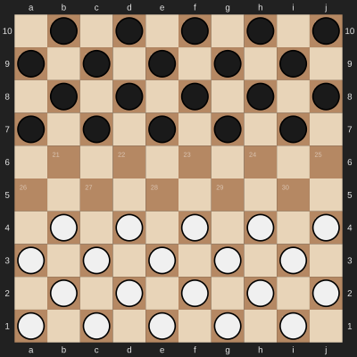
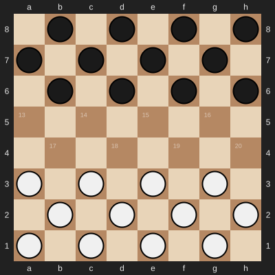
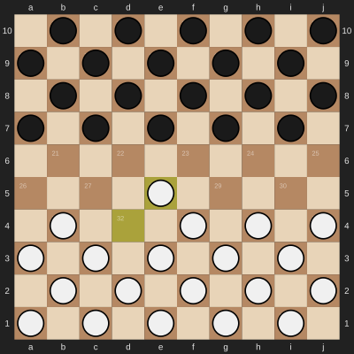
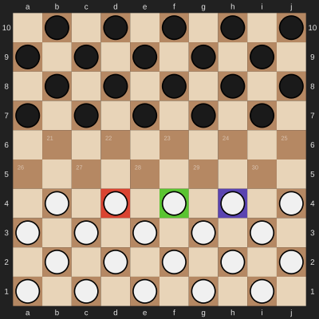
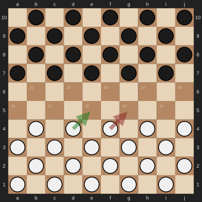
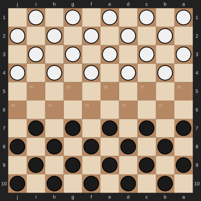
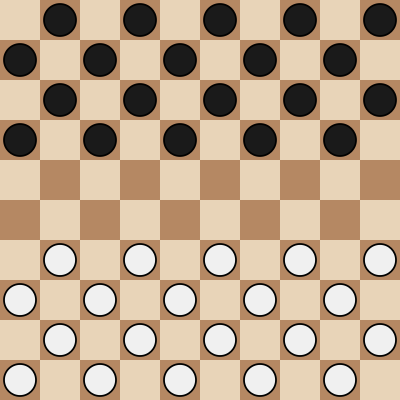

SVG Rendering¶
The draughts.svg module provides functions for rendering draughts boards and pieces as SVG images.
It supports both 8×8 (American) and 10×10 (Standard/Frisian) board variants with full customization options.
Basic Usage¶
Rendering a Board¶
The simplest way to render a board is to pass a board object to the board() function:
import draughts
board = draughts.StandardBoard()
svg = draughts.svg.board(board, size=400)
{kind=link}

The function returns an SVG string that can be saved to a file or displayed in a Jupyter notebook.
Rendering a Single Piece¶
You can render individual pieces using the piece() function:
import draughts
# Piece values: -2=white king, -1=white man, 1=black man, 2=black king
white_man = draughts.svg.piece(-1, size=60)
black_king = draughts.svg.piece(2, size=60)
White Man |
White King |
Black Man |
Black King |
|---|---|---|---|
{kind=link}
{kind=link}
{kind=link}
{kind=link}
Board Variants¶
The SVG module automatically adapts to different board sizes:
Standard (10×10)¶
board = draughts.StandardBoard()
draughts.svg.board(board, size=400)
American (8×8)¶
board = draughts.AmericanBoard()
draughts.svg.board(board, size=400)
{kind=link}

Highlighting¶
Last Move¶
Highlight the squares involved in the last move:
board = draughts.StandardBoard()
board.push_uci("32-28")
draughts.svg.board(board, size=400, lastmove=board._moves_stack[-1])
{kind=link}

Custom Square Colors¶
Fill specific squares with custom colors (using RGBA hex format for transparency):
board = draughts.StandardBoard()
draughts.svg.board(
board,
size=400,
fill={
31: "#ff000080", # Red with 50% opacity
32: "#00ff0080", # Green with 50% opacity
33: "#0000ff80", # Blue with 50% opacity
}
)
{kind=link}

Arrows¶
Draw arrows to annotate moves or tactics:
from draughts.svg import Arrow
board = draughts.StandardBoard()
draughts.svg.board(
board,
size=400,
arrows=[
Arrow(31, 27), # Green arrow (default)
Arrow(32, 28, color="red"), # Red arrow
]
)
{kind=link}

Available arrow colors: green (default), red, yellow, blue.
Board Orientation¶
Flip the board to show black’s perspective:
board = draughts.StandardBoard()
draughts.svg.board(board, size=400, orientation=draughts.Color.BLACK)
{kind=link}

Display Options¶
Minimal Board¶
Remove coordinates and square numbers for a cleaner look:
board = draughts.StandardBoard()
draughts.svg.board(board, size=400, coordinates=False, legend=False)
{kind=link}

Custom Colors¶
Override default colors with the colors parameter:
board = draughts.StandardBoard()
draughts.svg.board(
board,
size=400,
colors={
"square light": "#eeeed2",
"square dark": "#769656",
"piece white": "#ffffff",
"piece black": "#000000",
}
)
Available color keys:
square light,square dark- Board square colorssquare light lastmove,square dark lastmove- Last move highlight colorsmargin,coord- Margin background and coordinate text colorspiece white,piece black- Piece fill colorspiece white stroke,piece black stroke- Piece outline colorscrown white,crown black- Crown colors for kingsarrow green,arrow red,arrow yellow,arrow blue- Arrow colors
Jupyter Notebook Integration¶
The SVG module is designed to work seamlessly with Jupyter notebooks. The returned SvgWrapper
object implements _repr_svg_() for automatic display:
import draughts
board = draughts.StandardBoard()
draughts.svg.board(board) # Automatically displayed in notebook
Saving to File¶
Save the SVG to a file:
import draughts
board = draughts.StandardBoard()
svg = draughts.svg.board(board, size=400)
with open("board.svg", "w") as f:
f.write(svg)
API Reference¶
board()¶
- draughts.svg.board(board=None, *, size=None, coordinates=True, colors={}, lastmove=None, arrows=[], fill={}, squares=None, orientation=Color.WHITE, legend=True)¶
Renders a draughts board as an SVG image.
- Parameters:
board – A BaseBoard instance, or None for an empty board.
size – Image size in pixels, or None for no size limit.
coordinates – Whether to show coordinate labels on the margin.
colors – Dictionary to override default colors.
lastmove – A Move to highlight (shows start and end squares).
arrows – List of Arrow objects or (tail, head) tuples to draw.
fill – Dictionary mapping square indices to colors for highlighting.
squares – Iterable of square indices to mark with an X.
orientation – Viewing orientation (Color.WHITE = black at top).
legend – Whether to show square numbers on the dark squares.
- Returns:
SVG string wrapped in SvgWrapper for Jupyter integration.
{kind=link}
piece()¶
- draughts.svg.piece(piece_value, *, size=None, colors={})¶
Renders a single draughts piece as an SVG image.
- Parameters:
piece_value – Piece value (-2=white king, -1=white man, 1=black man, 2=black king).
size – Image size in pixels, or None for no size limit.
colors – Dictionary to override default colors.
- Returns:
SVG string wrapped in SvgWrapper for Jupyter integration.
{kind=link}
Arrow¶
- class draughts.svg.Arrow(tail, head, *, color='green')¶
Details of an arrow to be drawn.
- Parameters:
tail – Start square of the arrow (0-indexed).
head – End square of the arrow (0-indexed).
color – Arrow color (green, red, yellow, or blue).
{kind=link}